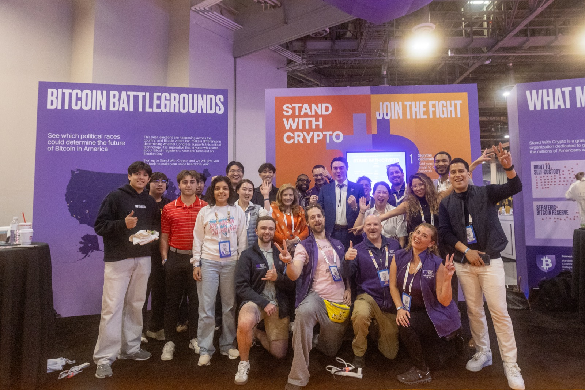

Bio
Mason Lynaugh is the Executive Director of Stand With Crypto, America’s largest crypto advocacy organization. As Stand With Crypto’s first hire and Community Director, Lynaugh led the growth of SWC’s grassroots community to nearly 3 million advocates nationwide, expanded state chapter programs to all 50 states, and launched the Stand With Crypto college chapter program. He is dedicated to building the infrastructure that helps convert the crypto community’s enthusiasm into pro-crypto policy, expanding opportunity and economic freedom for more Americans.
Prior to joining Stand With Crypto, Mason co-founded ATX DAO, an Austin-based organization he built to position Texas as a leading crypto hub — work that earned him a spot on Forbes’ “30 Under 30 Austin” list.
Pressmost recent first · scroll or let it run
- “In 2026 we're very much showing that we have the organizing capacity and that our advocates are a true voting bloc that can move the needle.” Reuters · 24 Aug 2026
- “They overlook crypto voters at their own peril.” CoinDesk · 24 Aug 2026
- “Advocates will be mobilizing in their communities during August recess to ensure their senators understand the urgency and necessity of enacting a fair, transparent legal framework.” Roll Call · 18 Aug 2026
- “The CLARITY Act will put an end to crypto users, developers, and companies existing in gray areas.” Washington Reporter · 25 Jun 2026 op-ed
- “We are thrilled by the bipartisan momentum in Congress to enact this much-needed legislation, finally giving crypto users and developers clear rules of the road that will unlock innovation, protect consumers, and allow our community to secure America's leadership in the global blockchain economy.” Senate Banking Committee · 15 May 2026
- “The Clarity Act on the floor will be the most important vote that lawmakers have ever taken as it pertains to crypto.” The Block · 14 May 2026
- “This year crypto voters are poised to play a powerful and decisive role at the ballot box,” Lynaugh said, adding that the goal is to ensure the 120th Congress is “the most pro-crypto session in America’s history.” crypto.news · 7 May 2026
- “It's really going to be interesting to see how the margins are shaped by people who are voting specifically for crypto champions or against crypto antagonists.” Semafor · 26 Mar 2026
- “This year crypto voters are poised to play a powerful and decisive role at the ballot box.” Barron's · 26 Mar 2026
- Named executive director of Stand With Crypto, after leading the group’s national grassroots and engagement strategy as community director. Politico Influence · 2 Mar 2026 mention
- “This is an issue that affects crypto voters and the average American very personally and, because of that, it really struck a chord.” Bloomberg Government · 21 Oct 2025
- “The Senate must act quickly and deliberately to pass market structure legislation. Congress has the opportunity to make America the definitive leader in the crypto industry.” Roll Call · 20 Oct 2025
- “2026 is where we prove that the crypto voter is a defining constituency for the next generation.” Punchbowl News · 5 Sep 2025
- “Crypto voters are engaged, organized, and paying attention, and they want leaders who will protect their right to build, innovate, and participate in this new economy.” The Hill · 25 Aug 2025
- “Always, from the beginning, it was about market structure. We have to codify how we want to treat crypto here.” Semafor · 12 Aug 2025
- “This moment is a reminder that groundbreaking legislation like GENIUS becomes law because of advocates who demand progress. Now, not only do we have a voice in the national conversation, but we also have momentum on our side.” The Block · 31 Jul 2025
- After the Clarity Act cleared the House Thursday afternoon, advocacy group Stand With Crypto’s community director Mason Lynaugh said the vote “moves us one step closer to a common-sense regulatory framework” and urged Senate leaders “to take swift action on this legislation and solidify America’s global leadership in the blockchain economy.” CNN · 17 Jul 2025
- “A lot of these people were not civically engaged before, and I don’t know if the genie’s going back in the bottle.” NBC News · 17 Jun 2025
- “Crypto voters are energized and eager to show elected officials and candidates alike that the 2024 elections were only the beginning.” Washington Examiner · 9 Jun 2025
- Ahead of Monday night’s vote, Stand with Crypto Community Director Mason Lynaugh said the group’s 2.2 million supporters had an “undeniable impact in the 2024 election” and were watching the vote closely to hold lawmakers accountable. Fox Business · 20 May 2025

Links
- stand with crypto
- standwithcrypto.org
- x
- x.com/masonlynaugh
- linkedin.com/in/masonlynaugh
- github
- github.com/masonleenaugh
Also
- announcement
- stand with crypto names new executive director
- forbes
- 30 under 30, austin